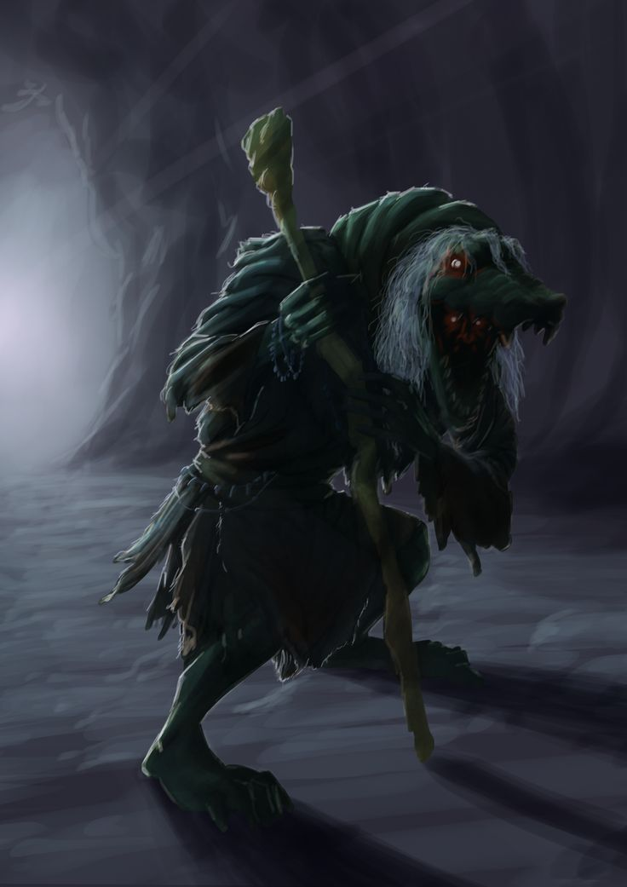

The legend of the Rasga Mortalha is a popular story that involves the Rasga mortalha owl, a bird present throughout the Brazilian territory, but especially associated with the north and northeast regions of Brazil. Here is the narrative of the story:
Suindara, an intelligent and respected young woman, worked as a mourner (a professional who cried for the dead). She fell in love with Ricardo, the son of a prejudiced countess named Ruth. When Ruth discovered the romance, she set up a fake meeting between Suindara and sent an employee to kill her. The city, moved, buried Suindara and placed a beautiful statue of a white owl in his crypt. Suindara's father, upon discovering the crime, performed a ritual to avenge her. He made the young girl's spirit enter the owl statue, giving it a life of its own. The owl then flew to the balcony where Ruth slept and made its characteristic hoot. By dawn, Ruth was dead, her clothes all torn. From this event onwards, the owl gained a reputation for being ominous.
Cuca is a character from Brazilian folklore. She is a scary-looking old witch with a crocodile head and huge nails. The legend has it that the witch Cuca sleeps once every seven years. Therefore, parents try to convince their children to sleep at the correct times, otherwise they will be taken away by Cuca.
The Caipora, also called “Caipora do Mato”, is a figure from Brazilian folklore, considered the protector of animals and guardian of the forests. Note that it can be represented by a man or a woman. This will vary depending on the region in which the legend is reported. When she senses that a hunter enters the forest with the intention of slaughtering animals, she lets out loud howls and screams, scaring these men. Their intention is to care for these animals and protect the environment. The story has it that its strength is greatest on holy days and weekends.
It's interesting to note that Caipora smokes. So, in order to please her and be able to hunt in peace in the forests, some hunters take rope tobacco for her. In the legend, they must leave the tobacco near the trunk of a tree. Although she allows them to hunt that day, it is forbidden to kill pregnant females.